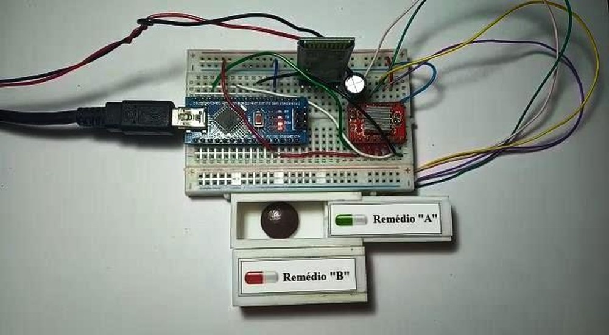

Notícias cidade
Estudante de Leopoldina desenvolve aplicativo que ajuda pacientes a tomarem remédios

A aluna do curso de Eletrotécnica do Centro Federal de Educação Tecnológica de Minas Gerais (Cefet) em Leopoldina, Helena Salles, criou um aplicativo para ajudar as pessoas que precisam tomar muitos remédios e que tenham problemas de memória ou doenças degenerativas.
"Desenvolvido sob orientação de um professor, o dispositivo está em fase experimental.
"O aplicativo é conectado a um dispenser de remédios. O usuário pode programar os horários de medicação. Quando esse horário chegar,
ele ativa um alarme no celular além de ativar o dispenser", explicou Helena Salles em vídeo enviado ao MGTec."

Em uma das telas, o usuário programa a hora que tem que tomar o remédio. Cada botão no aplicativo é um dispenser com medicamento diferente.
Conforme a programação, o aplicativo solta na hora certa para o paciente.